| Step 1 Press the Download Result push button. |
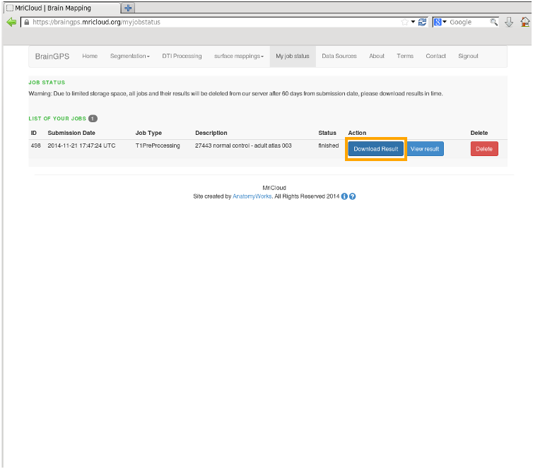 |
| Step 2 A dialog is displayed. Select the Save push button to save the Results.zip file to your file system. |
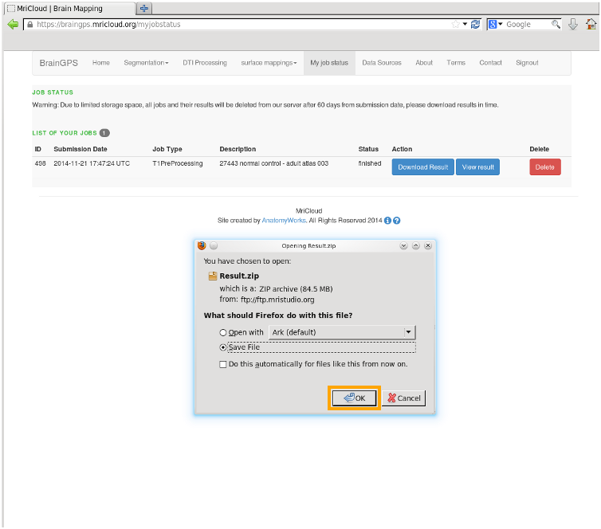 |
| Step 3 Unzip the Results.zip file. A list of the result files is shown at right. The results shown correspond to an image file named T1.img This name of the image added as a prefix to the results. A description of result files is included in the table below. |
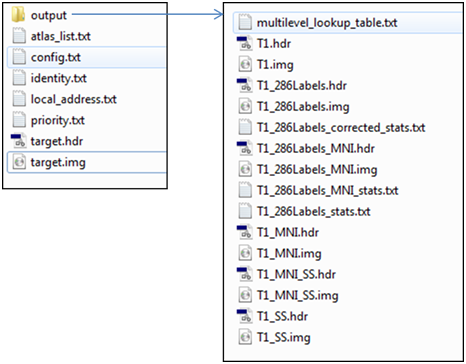 |
| Directory | File Type | File Name | Description |
| Text | atlas_list.txt | The name and the version of the multiple atlases used for the processing | |
| Text | config.txt | Parameters used by segmentation algorithm | |
| Text | identity.txt | User email | |
| Text | local_address.txt | Image file names | |
| Text | priority.txt | Priority level | |
| Text | Config.txt | The submitted images | |
| output | Image | A User_defined_filename.img/hdr | The submitted T1-weighted image that are converted to an axial image orientation, histogram matched, and intensity inhomogeneity corrected. The matrix size remains the original dimensions. |
| output | Image | B User_defined_filename_SS.img/hdr | Same as A, except that image is skull-stripped. |
| output | Image | C User_defined_filename_MNI.img/hdr | Same as A, except that the image is linearly normalized to the MNI space. The matrix size is 181x217x181 / 1 x 1 x 1 mm. |
| output | Image | D User_defined_filename_MNI_SS.img/hdr | Same as C, except that the image is skull-stripped. |
| output | Segmentation label files | User_defined_filename_286Labels.img/hdr | An ROI file that contains the 286 defined structures. |
| output | Segmentation label files | User_defined_filename_286labels_MNI.img/hdr | An ROI file that contains the 286 defined structures in the MNI space. |
| output | Segmentation label files | multilevel_lookup_table.txt | This contains structure look-up table in a text format. |
| output | Volume report files | A User_defined_filename_286Labels_corrected_stats.txt | The volumes (mm^3) of all defined structures with 10 different granularity levels in the native patient coordinates. |
| output | Volume report files | B _defined_filename_286Labels_MNI_stats.txt | Same as A, but after the image normalization to the MNI coordinates by linear transformation. |
| Once the image is loaded, then open a segmentation label file.
Again, the label files are in Analyze format. Choose the label file in the normalized (MNI) space. |
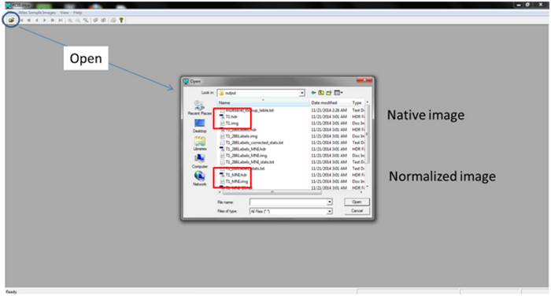 |
| Once the image is loaded, then open a segmentation label file. Again, the label files are in Analyze format. Choose the label file in the normalized (MNI) space. |
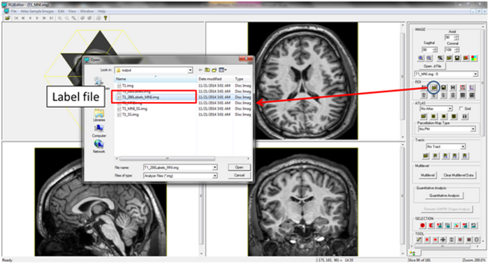 |
| Then the segmentation results can be visualized. The labels are listed in the right column
Note that the objects have only numbers without structural names. The look-up table is provided in the output (Multilevel_lookup_table.txt). |
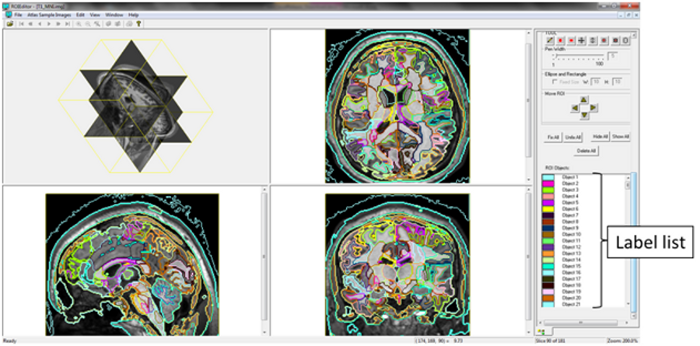 |
| One of the key features of our segmentation pipeline is the multiple granularity analysis.
To use this feature, press the "multilevel" button and specify the "Multilevel_Lookup_table.txt" included in the output files. |
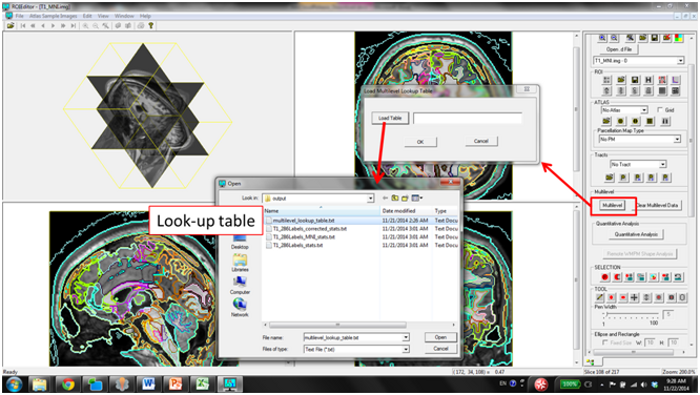 |
| Once the look-up table is loaded, segmentation results at five different granularity levels with two different hierarchical relationships can be visualized
The numerical report that can be obtained by pressing the "Statistics of All the Levels" is the same as "User_defined_filename_286labels_stats.txt" |
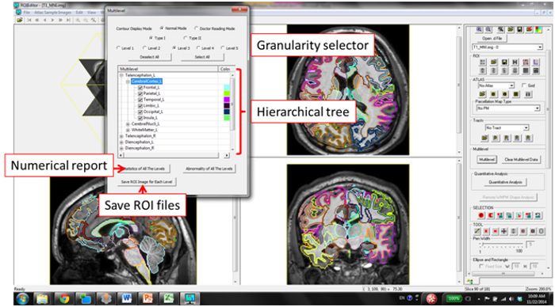 |
| For those who have intense bone marrow signals, cortical definition may leak. Using RoiEditor, these leaks can be assigned to "Area #254 (= spaces outside the brain)", which are not included in subsequent numerical reports | 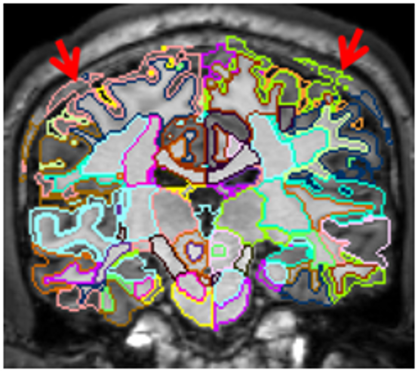 |
| There are periventicular white matter regions which have lower intensities. There are specific ROIs that define these areas, but they may leak into the adjacent caudate. This leak can be most easily corrected (assigned to the caudate) using a series of sagittal planes. | 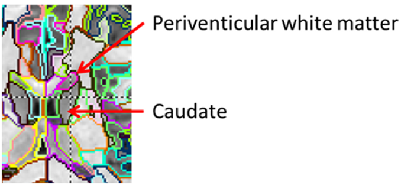 |
| In certain subjects, the fusiform gyrus wraps around the lateral region of the hippocampus and is mislabeled as a part of hippocampus. Usually it happens at about 4-5 consecutive axial slices, which can be corrected using RoiEditor | 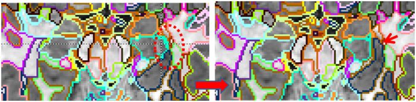 |
| The image at right shows initial interface, which consists of the Image and Control Panes. The Control Pane has visualization control, granularity control, and the structural list | 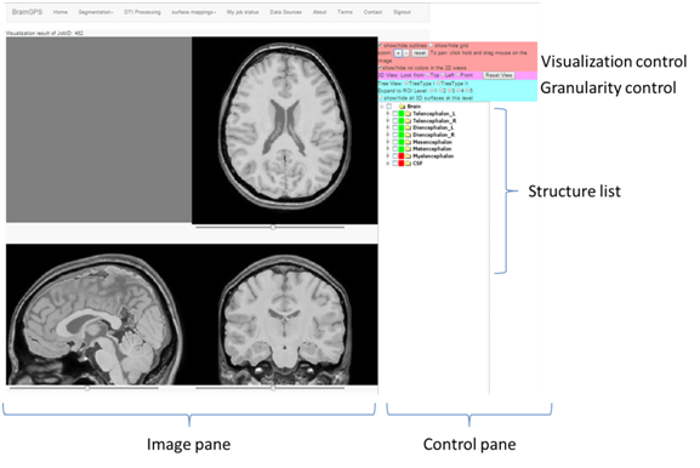 |
| By choosing a hierarchical type (Type I or II) and a granularity level, the brain segmentation results can be visualized as below. Similar to the "Multilevel" function of RoiEditor, hierarchical relationship of various structures is visualized as a tree structure. | 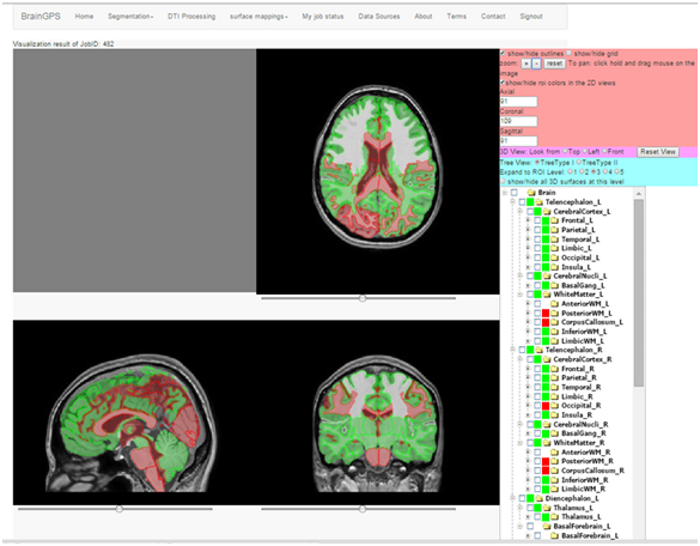 |
| A structure of interest can be chosen by placing a cursor directly on the image or from the structural list in the right column. A 3D view of the selected structure is then visualized. | 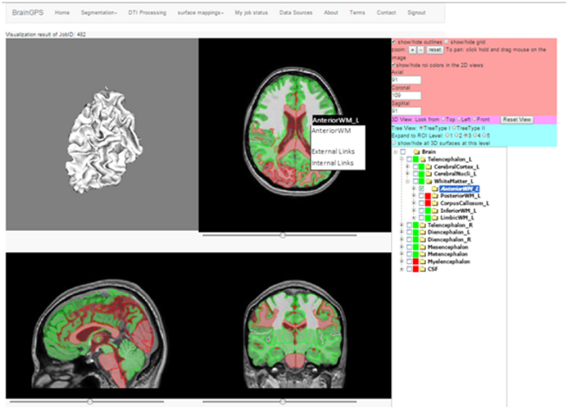 |
| In the 2D views, the color coding is based on z-scores of the volumes compared to normal data. Green color represents structures smaller than the average and red means larger. The actual value with respect to the normal database as a function of age can be visualized from the contextual menu (Internal Links -> Percentage plot). | 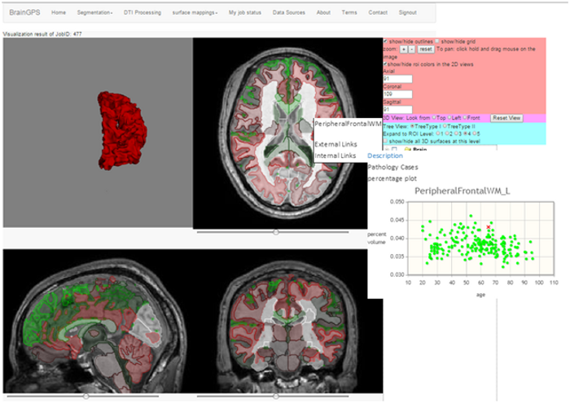 |